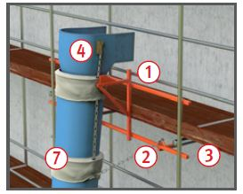
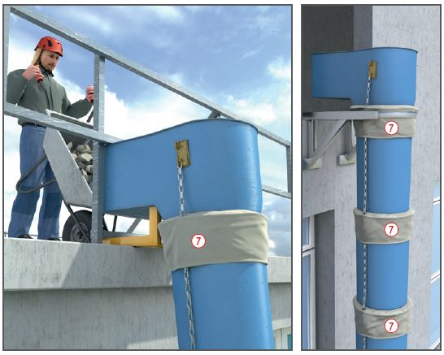
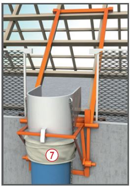

Mangelhafte Sicherungsmaßnahmen
bei der Montage oder
während der Benutzung am Einfülltrichter
können zu Absturzunfällen oder zu Verletzungen
durch herabfallende Teile führen.
Staub kann zu Reizungen oder
Erkrankungen der Atemwege,
der Haut und der Augen führen.

Schutzmaßnahmen
Aufbau
Beim Auf- und Abbau Aufbau- und
Verwendungsanleitungen
der Hersteller beachten.
Nur durch unterwiesene Personen auf- und abbauen lassen.
Ausschließlich die vom Hersteller
vorgesehenen Aufhänge- und
Befestigungskonstruktionen
benutzen .
Gerüstkonstruktionen im Aufhängebereich
der Schuttrutsche
zusätzlich verankern und verstreben .
Bei Absturzhöhen von mehr
als 2,00 m Absturzsicherungen vorsehen .
Ab 10,00 m Aufbauhöhe zusätzliche
Verankerungen anbringen.
Gefahrenbereiche festlegen
und absperren .
Immer Einfülltrichter verwenden .
Für ein staubfreies Arbeiten
evtl. Staubschutzmanschetten
Abdeckhauben und Container-
Abdeckplane einsetzen.


Verwendung
Zur Vermeidung von Verstopfungen der Schuttrutsche
und Schuttrohrabriss maximale
Ablenkung nach Herstellerangaben beachten.
Schuttrutschenaustrittsöffnung
ständig auf freien Austritt
kontrollieren.
Zur Beseitigung von Verstopfungen der Schuttrutsche nicht unterhalb der Schuttrohröffnung arbeiten oder das Schuttrohr verziehen.
Zusätzliche Hinweise zur Flachdachbefestigung
Tragfähigkeit der Unterkonstruktion prüfen und ggf. nachweisen.
Max. Auslegerüberstand einhalten.
Originalballastierung unverrückbar
montieren.
Zusätzliche Hinweise zur
Schrägdachbefestigung
Schrägdachbefestigung nur an
tragenden Teilen (Sparren/Schwellholz) vorsehen. Nie auf
die Dachlatten aufsetzen.
Zusätzliche Hinweise zur Brüstungsbefestigung
Tragfähigkeit der Brüstung
prüfen und ggf. nachweisen.
Lastverteilende Unterlagen
verwenden.
Prüfungen
In regelmäßigen Abständen
und vor jedem Aufbau alle
tragenden Elemente und Verschleißteile
auf Beschädigung
überprüfen.
Nach Beseitigung einer Verstopfung
alle tragenden Teile auf Verformung bzw. Schäden
prüfen und ggf. austauschen.